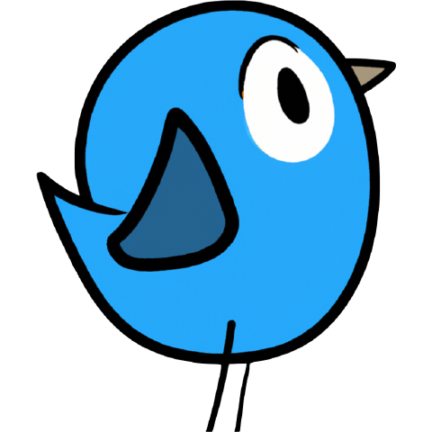
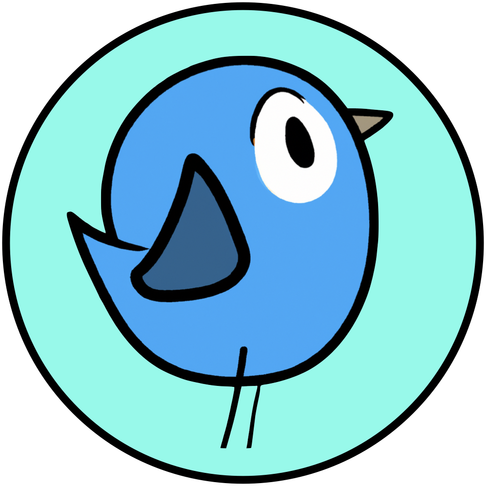
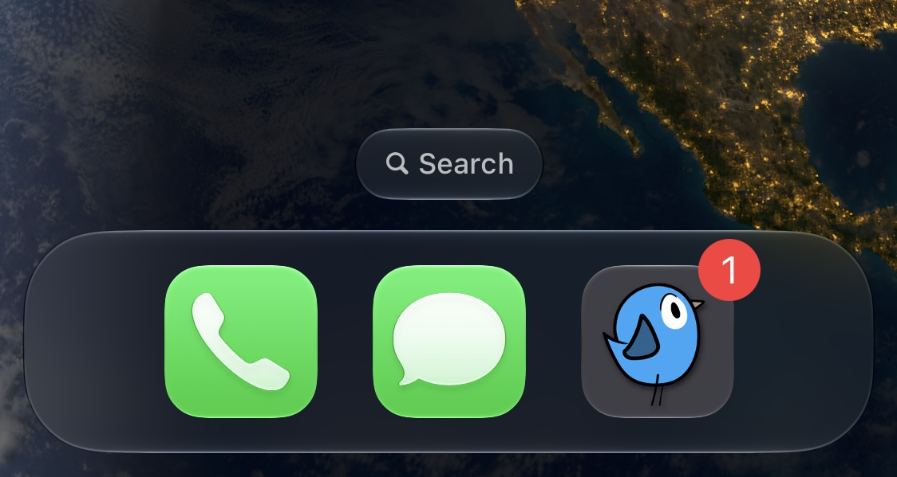

-
ZIP · 6 PNGs, 1024 × 1024
App icons
The bird in every colour the app comes in: cyan, green, violet, yellow, light and dark.
Download -

PNG · 480 × 480Logo
The bird on a clear background.
Download -

PNG · 1000 × 1000Round icon
The bird on a mint circle.
Download -
PNG · 1024 × 500
Name and tagline
The app icon, the name and the tagline on blue.
Download -

JPEG · 1124 × 599On the home screen
PeerSky in an iPhone's dock, next to Phone and Messages.
Download


Need something that isn't here? Email peersky [at] p2plabs [dot] xyz.